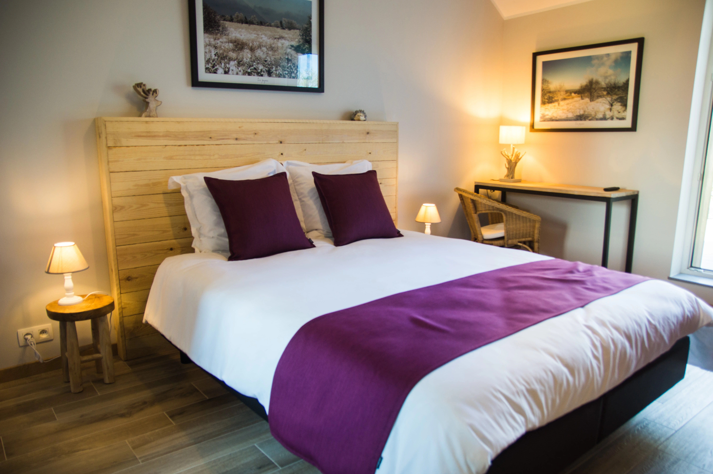

Chambre "Les Fagnes"
- Chambre lumineuse et spacieuse, aux teintes de la bruyère, climatisée, avec terrasse, télévision et wifi.
- Salle de bains dans la chambre avec WC, évier, sèche-cheveux et douche spacieuse.
- La chambre et un espace commun sont situés au 1er étage de notre maison.
- Prix dégressif à partir de la deuxième nuit.
85€ / La Première Nuit